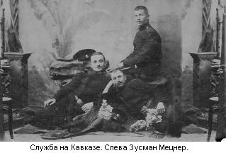
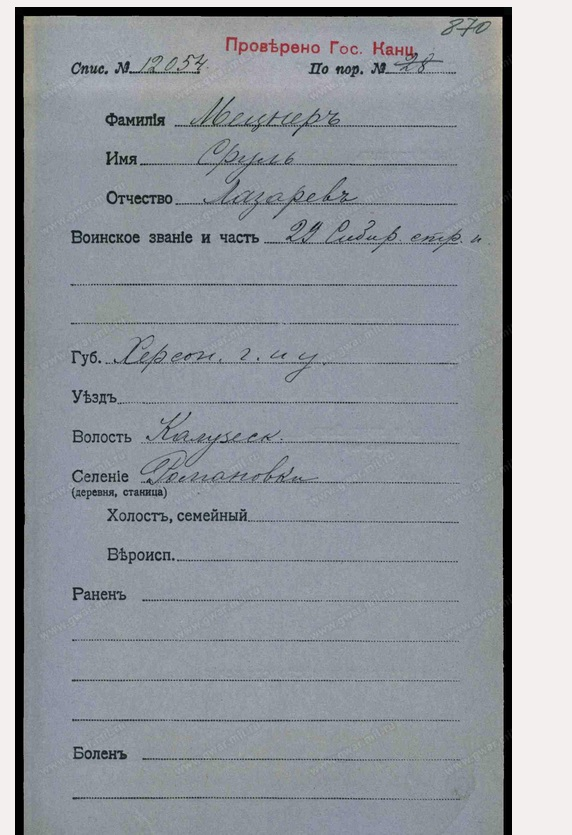
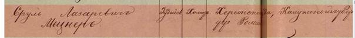
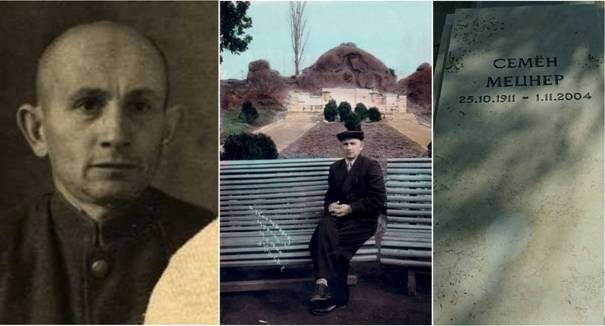
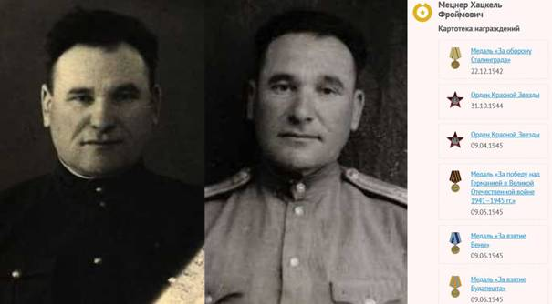
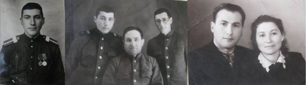
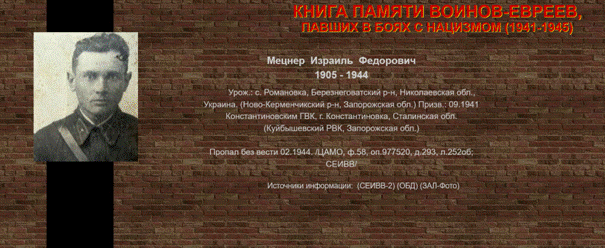
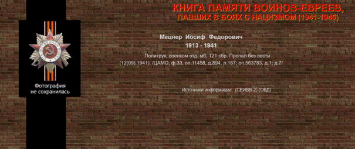
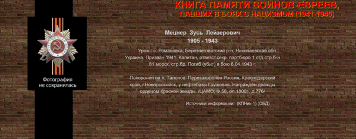

|
Борис
Штейман
borisshteyman@rambler.ru
О СЕМЬЕ ЗУСМАНА МЕЦНЕРА
 Мой
дедушка, Зусман Мецнер (бабушка и родственники называли его Зися) родился
в семье земледельца колонии Романовка Хаима Мецнера в 1888 году. Как
видно из "Приговора
общества земледельцев колонии Романовской на общем сходе от апреля 15 дня
1843 года" присутствовал и поставил свою подпись дед моего
дедушки тоже Зусман Мецнер, в память о котором, как это принято у евреев,
дали ему имя. Это свидетельствует о том, что мой прапрадед был в первой
группе переселенцев, основавших еврейскую колонию Романовская или, как её
позже называли, Романовка.
Дедушка, как и все мальчики-колонисты, закончил хедер и
свободно писал и читал как на идиш, так и на древнееврейском. До 1930
года дедушка прожил в колонии Романовка, где как и его предки занимался
хлебопашеством. Перерыв был только на время службы в царской армии, о чём
свидетельствуют фотографии, присланные с Кавказа, где он проходил службу.
Когда я был совсем маленький, дедушка часто рассказывал мне истории о своей
службе в армии. Сложности службы, особенно первый год, вызывало слабое
знание русского языка. Ведь в колонии общались только на идиш. Да и
командиру было трудно выговаривать непонятное имя, и вообще он не мог
понять, где там имя, а где фамилия, а где отчество. Поэтому когда он
отдавал команду дедушке, то называл его Мецнер Нахман Зусман Хаим. Дед
всегда смеялся, когда вспоминал, как его называли в армии.
После службы в армии он вернулся в Романовку, где
продолжал заниматься любимым и единственным ему знакомым делом –
хлебопашеством. Сельскохозяйственную работу он знал досконально, ведь он
уже был земледельцем в третьем поколении. С раннего детства он и его
братья помогали отцу в сельхозработах в поле. И его отец, будучи опытным
земледельцем, передавал навыки своим детям. Кроме моего дедушки в семье
Хаима и Аси Мецнер было ещё три сына Альтер, Абба и Янкель и три дочери,
это то что я знаю, которые дожили до взрослого возраста и у которых были
свои семьи. После войны в живых остались только дедушка и его сестра
Маша. Из племянников в живых остались только те, кто был уже взрослыми и
покинул Романовку для учёбы или работы в городе. Все, кто остался в
Романовке, вошли в страшную цифру 998 - столько жителей колонии Романовка
было уничтожено в последний день существования этой еврейской колонии, 14
сентября 1941 года.
От участия в первой империалистической войне 1914 года
всеми правдами и неправдами дедушкe удалось отвертеться. Он не был
воинственным человеком и не понимал во имя чего он должен был рисковать
своей жизнью. Его родиной была не огромная Российская Империя, а
маленькая и родная Романовка. Он любил обрабатывать землю, выращивать
виноград и делать из него великолепное вино, а не убивать людей, которые
ему ничего плохого не сделали. Немецкая оккупация в гражданскую войну
была наименее тяжким периодом этого смутного времени. Набеги белых,
красных, григорьевцев, махновцев и прочих бандитов принесли Романовке
гораздо больше бед, чем немецкая оккупация. В дальнейшем, летом 1941
года, это сослужило очень печальную роль для жителей Романовки. Многие не
могли поверить в то ,что потомки тех немцев, которых они знали по периоду
гражданской войны могут уничтожить всех от мала до велика только за то,
что они были евреями. Если бы не этот факт, то я думаю, число погибших в
Романовке было бы гораздо ниже цифры 998.
Политикой дедушка никогда не интересовался и не
участвовал ни в каких группировках: ни в белых, ни в красных, ни в прочих
мастях. Он работал на земле, насколько это позволяли обстоятельства того
смутного времeни. После окончания гражданской войны и страшного голода
начала 20-х, благодаря трудолюбию и умению земледельцев, жизнь постепенно
начала налаживаться. Дедушка со своим братом Янкелем смогли построить дом
один на две семьи с разными выходами. Дом довольно добротный. Я его
видел, посетив Романовку в середине 60-х годов. Дедушка подвёл меня к
своему дому, и даже о чём-то разговаривал с его новыми хозяевами. Этот
дом, как и все остальные дома колонии, был занят украинцами после полного
истребления евреев. Естественно, всё имущество досталось тоже им. Дедушка
никогда даже не заводил разговор о возврате дома, который принадлежал ему
на правах собственности. Видимо воспоминания о том, что из этого дома
повели на расстрел его любимого брата Янкеля с женой и младшей дочерью
были настолько сильны, что материальная сторона этого вопроса казалась
мизерной, а может и юридически это было сделать сложно.
Но недолго длилась оттепель. Пришло время
коллективизации, раскулачивания и других известных процессов. Вся та
глупость и несправедливость, которая начала твориться в тот период,
буквально вытолкнули дедушку из его любимой Романовки. И в 1930 году
дедушка переехал в Херсон. Не имея никакой городской специальности, а
учиться было уже поздно, так как ему в то время было уже 42 года, он
пошёл работать в артель на очень тяжёлую физическую работу. В артели он
на ручном прессе делал гвозди. Он был физически очень крепок, так как
физический труд в сельском хозяйстве и постоянное нахождение на свежем
воздухе закалили его. Я сейчас думаю, насколько же должны были создать в
то время невыносимые условия для сельских жителей, что такие прирождённые
земледельцы, как мой дед, бросил всё и подался в неизвестную ему и чуждую
городскую жизнь. Но как говорят, нет худа без добра. Отъезд из Романовки
в 1930 году, в 1941 оказался спасительным для дедушки и его семьи, потому
что все, кто остался в Романовке были уничтожены нацистами и их
прихвостнями.
Работал на прессе дедушка с той же отдачей, как и на
земле, потому что плохо работать он просто не умел. И вскоре его
фотография появилась на городской доске почёта, которая называлась доска
Стахановцев, где она провисела до последнего дня, перед оккупацией
Херсона фашистами.
Дедушка был очень ответственным человеком, но часто нерешительным.
Эти два качества его характера способствовали тому, что он поздно
женился. Конечно все это смутное время, на которое пришлась его
молодость, тоже способствовали этому. Очень много лет дедушка встречался
с девушкой, которую звали Лея Пайкина. Они очень любили друг друга, но
предложения дед ей не делал. Уже вся Романовка шушукалась, "столько
лет встречаются и видно, что любят друг друга, а не женятся".
Лея Пайкина, в будущем моя бабушка, как и дед, родилась
в колонии Романовка в 1896 году в семье земледельца Фишеля Пайкина. Её
прадед Гирша Пайкин также принадлежал к первым поселенцам колонии
Романовской, что подтверждает вышеупомянутый документ. Бабушка очень рано
лишилась отца, и моя прабабушка, оставшись вдовой и имея на руках троих
детей повторно вышла замуж за вдовца имеющего двух своих детей, и после
этого у них родилось ещё трое совместных детей. В те времена такие семьи,
как я слышал, были не редкость. Говорили: " Твои дети - мои дети и
наши дети". Видимо материальное положение вновь созданной семьи было
плачевным, и бабушка очень рано вынуждена была перейти на собственные
хлеба, устроившись прислугой в дом более зажиточного колониста
Тарлавского. По рассказам бабушки, я помню, что жизнь её там была не
очень сладкой, но видимо положение было безвыходным и она там проработала
довольно много лет.
И вот ей уже 31, а её любимому, с которым она
встречается множество лет уже 39, но предложение он ей не делает. Годы
летят, по тем временам девушке 31 и не замужем, это катастрофа. За ней
пытались ухаживать и другие парни, но она любые ухаживания отвергала,
т.к. безумно любила Зисю. И тогда бабушка пошла на хитрость. Она сказала
деду, что ей сделали предложение, и она дала согласие. И вот только
тогда, когда дед понял, что он может потерять свою любимою Лею, он сделал
ей предложение. А на следующий год, когда дедушке было уже 40, у них
родилась дочь, которую назвали, в память о дедушкином отце, Хаичкой.
Девочка родилась 13 марта 1928 года в колонии Романовка. Эта девочка в
последствии стала моей мамой. А в 1930 году, как я уже упоминал, они
переехали в Херсон. Но Романовку они полностью не покинули, за дедушкой
осталось пол-дома, и бабушка с мамой каждый год на всё лето приезжали в
Романовку, а дедушка, по - возможности, их там навещал. Зимой за домом
следил дедушкин брат Янкель, который с семьёй остался жить во второй
половине дома. Так это продолжалось до страшного лета 1941 года. И тут
произошло несколько чудес, благодаря которым у меня сейчас представился
шанс писать эти воспоминания. Чудо номер 1. Что-то помешало бабушке с
мамой, как обычно в начале лета уехать в Романовку. То ли мамины занятия
в школе, то ли учёба племянницы Аси (старшей дочери Янкеля Мецнера, она в
это время училась в Херсоне и жила у наших), но факт тот, что отъезд на
лето в Романовку задержался. А дальше началась война и уже было не до
летнего отдыха.
Немцы стремительно приближались к Херсону. Слухи по
городу ходили самые невероятные. И каким слухам верить никто не знал.
Одни говорили, что Херсон оставят, другие, что Херсон немцам никогда не
сдадут. Все, кто был призывного возраста были на фронте. Дедушке в 1941
году было уже 53 и он был уже не призывного возраста. Что делать было не
понятно. И вот уже где-то за городом слышна артиллерийская стрельба. Ещё
никто не знал и не мог поверить в то, что немцы уничтожают полностью всех
евреев, хотя слухи такие уже ходили, и даже Сталин что-то об этом говорил
по радио, но до конца поверить в такое было невозможно, а слухов тогда
ходило множество.
Так просто сорваться с насиженного места и решиться
бежать в неизвестность, тоже было непросто. Видимо, в очередной раз
сыграла нерешительность деда, поэтому никаких шагов они и не
предпринимали. И тут произошло чудо номер 2. Какая-то сила вытолкнула
деда на улицу, в городе суматоха, снуют военные, беженцы, в общем, полный
хаос. И тут на деда наткнулся офицер, который оказался земляком из
Романовки – Илья Свердлов. Он командовал ПВО Херсона. С удивлением он
спросил у деда: „Почему вы до сих пор в Херсоне. Через несколько часов мы
оставляем город.“ Дед в растерянности начал оправдываться, что говорили,
что Херсон не сдадут. Он сам не верил своим словам, но в это хотелось
поверить, чтобы не бросать свой дом и бежать в неизвестность. И тут уж
дядя Илюша (он после войны жил в Херсоне, я его хорошо помню)
командирским голосом приказал деду немедленно бежать домой, взять Лею и
девочек, и прямо к Днепру к переправе, где он сказал, поможет усадить их
на баржу, отправляющуюся на противоположный берег Днепра. Он предупредил,
что если останетесь в Херсоне, все погибните, потому что немцы уничтожают
всех евреев. Видимо, авторитет Свердлова и его командирский голос
подействовали на деда отрезвляюще. Все сомнения, как рукой сняло. Быстрым
шагом он направился домой. Придя домой, он сказал бабушке, как можно
быстрее взять всё самое необходимое, потому что буквально через час
последняя баржа отправляется из Херсона. Жили они на углу улиц
Декабристов и Торгового переулка, примерно в 15-20 минутах ходьбы от
Днепра. Быстро собравшись, они двинули в путь. И тут мама вспомнила, что
на доске "Стахановцев" осталась висеть фотография дедушки. И
она заявила, что фотографию своего любимого папочки она немцам не
оставит. Никакие уговоры, что они могут не успеть на последнюю баржу, на
неё не действовали. Она побежала, а это было в двух кварталах от того
места, где они находились, сорвала фотографию и взяла её с собой. Сейчас
эта фотография хранится в нашем семейном альбоме. В общем, с помощью дяди
Илюши Свердлова они разместились на барже и она отплыла в сторону
Цурюпинска. За ними уже всё грохотало, немецкие войска вступали в Херсон,
а баржа переплыв основное русло Днепра, вошла в Цюрупинскую Конку и
скрылась в зелени Днепровских плавней. Выгрузившись в Цюрупинске, им
пришлось преодолеть пешком многокиллометровый путь по пескам до
железнодорожной станции Пойма. На станции Пойма они сели в состав, шедший
на восток.
Путь беженцев на восток в составах, подвергающихся
бомбардировке немецкой авиации, остановка в степи, и бег от состава в
рассыпную – всё это неоднократно демонстрировалось в фильмах и через всё
это прошли наши. Когда оторвались от линии фронта на приличное
расстояние, и почувствовав себя в относительной безопасности, возник
вопрос куда ехать. И дедушка решил, что они поедут в Енакиево, ведь там
живёт дедушкина родная сестра Маша. Там они переждут пока разгромят
немцев и освободят Херсон. Мысль о том, что немцы смогут дойти до
Донбасса, а тем более захватить его, никому в голову тогда и не
приходила. Так они добрались до Енакиево и остановились у тёти Маши. Тётя
Маша жила в Енакиево со своим мужем Калманом Штерном и тремя дочерьми
Фирой, Нехой и Ниной. Старший сын Абрам сражался на фронте, а дядя Калман
был уже непризывного возраста. Тётя Маша очень обрадовалась, когда
увидела брата, невестку и племянниц живыми. Ведь жизнь остальной родни,
оставшейся под немцем, была под большим вопросом... Однако фронт быстро
приближался к Енакиево, и когда дедушка, уже имевший херсонский опыт,
завёл разговор, что надо собираться в дорогу и двигать на восток, дядя
Калман заявил, что они никуда не поедут. Он хорошо помнит немцев с
периода оккупации 1918 года и с ними можно хорошо делать гешефт, а все
эти разговоры про немцев, пропаганда. Никакие увещевания на него не
действовали, а фронт неумолимо приближался к Енакиево. Дедушке он сказал:
"Вам уже всё равно терять нечего, вы уже всё бросили, так что вам
легко подняться и ехать, а я не собираюсь всё бросать и ехать в
неизвестность". Когда уже по всем приметам, известным дедушке с
Херсона, он понял, что через несколько дней немцы будут в Енакиево, он
сыграл в семье тёти Маши ту же роль, которую сыграл в его семье, в
Херсоне, Илья Свердлов. Он чувствовал, что Маша – единственная его
сестра, оставшаяся в живых. И он решительно заявил Калману (что на
дедушку абсолютно не похоже, так-как он был очень мягким человеком), что
Маша и девочки поедут с ним в эвакуацию. «Я не хочу лишиться последней
сестры, а ты можешь оставаться делать с немцами гешефт!". И они
начали собираться в дорогу. Что послужило переломом, в желании Калмана
остаться, я не знаю, но на восток он поехала вместе со всеми. Дальше их
путь лежал на юг Казахстана. По распоряжению какого-то чиновника, который
занимался распределением беженцев, их разделили. Дедушку, бабушку, маму и
Асю распределили в глухой аул, а тётю Машу с семьёй в другое место.
Опишу несколько эпизодов из жизни в эвакуации, которые
больше всего запомнились мне из рассказов дедушки, бабушки и мамы. Первое
- постоянное и непроходящее чувство голода. В ауле, куда их распределили,
жили казахи и корейцы. Никто из них не говорил по-русски. Дедушка с ними
разговаривал на идиш, а когда бабушка ему говорила "Зися, что ты с
ними говоришь на идиш?!", он резонно ей отвечал: "А какая
разница, ведь им всё-равно, что идиш, что русский, они не понимают ни
того ни другого, а мне легче говорить на идиш". До конца своей
жизни, даже когда дед довольно хорошо говорил по-русски, думал он на
идиш, и излагаясь по-русски, в уме переводил это с идиша. Это легко было
видно по обороту речи.
Поселились они в какой-то заброшенной лачуге, но
по-сравнению с постоянным голодом, жилищные невзгоды меркли. В скором
времени дедушку призвали в трудармию. Что они там делали, и чем их там
кормили, из рассказов дедушки я уже не помню, но из рассказов мамы, я
помню, что из трудармии вернулся скелет, обтянутый кожей, больной,
абсолютно беспомощный человек, которого списали умереть, выжав из него
все соки. Как он добрался домой, навсегда осталось загадкой. Из крепкого
мускулистого мужчины, он превратился в глубокого старика, больше
мёртвого, чем живого. И тут женщины начали борьбу за его жизнь. Хоть и
сами были постоянно голодными, отрывали от себя последнее, чтобы как-то
вернуть дедушку с того света. Они нанимались на любую работу ради
продуктов питания, чтобы принести их дедушке и поставить его на ноги. И
их неимоверные усилия привели к положительному результату, и они его
вытащили буквально с того света. После этого дедушка прожил ещё 26 лет.
И ещё один незабываемый эпизод из жизни в эвакуации.
Произошёл он 13 марта 1944 года. В этот день маме исполнилось 16 лет и
она училась не то в школе каучуководов, не то хлопководов, куда её
направили. В этот день она куда-то шла, и вот видит, к ней навстречу
бежит улыбающаяся подруга и кричит что-то от радости. Бросившись на маму,
стала её обнимать и целовать. Мама только успела подумать, откуда она
знает, что у меня день рождения, ведь я никому не говорила. Вслух она
спросила: "Откуда ты знаешь?" "Как откуда, по радио только
что передали, что твой Херсон освободили!" Буквально на следующий
день мама начала собирать необходимые документы для возвращения в Херсон.
Бабушка и дедушка настолько были измучены всеми лишениями и невзгодами,
что действовать не могли. И фактически мама сама, будучи 16-летней
девчонкой, собрала все необходимые документы и организовала возвращение в
Херсон.
Вернувшись в Херсон, они пришли к своей квартире,
которая была занята, и куда их не впустили. Они побрели к своим знакомым,
которые выделили им на время угол. Дедушка пытался вернуть квартиру,
квартира была жилкоповская, но у него ничего не получилось. Вообще, в
жизни был он не пробивным человеком. В конце-концов, через некоторое
время жилкоп им выделил маленькую комнатушку на улице Фрунзе. Комнатушка
эта находилась напротив дома, в котором жила моего папы (Зиновий Штейман)
родная сестра Катя, у которой после войны папа жил, продолжая прерванную
войной учёбу в финансовом техникуме. Там мои родители обратили внимание
друг на друга, полюбили и поженились, и прожили в любви и согласии до
конца своих дней.
Публикуется
впервые
06-05-2007
О чем поведала ревизская сказка 1858 года.
Когда 06-05-2007 я написал то, что помнил о
семье моего дедушки по маминой линии,
Зусмана Мецнера - единственный архивный документ из далекого
прошлого, с которым я был знаком,
был "Приговор общества земледельцев колонии
Романовской на общем сходе от апреля 15 дня 1843 года"
Из 115 подписей всех хозяев
дворов и должностных лиц колонии Романовка, фамилия Мецнер встретилась
лишь однажды. И что меня поразило
- хозяина двора звали так же как и
моего дедушку - Зусман. О родственной связи Зусмана Мецнера, поставившего
свою подпись в 1843г., и моим дедушкой Зусманом Мецнером родившемся в
Романовке в 1888г., мне оставалось только догадываться. Максимум что я знал вглубь своей родословной - дедушкиного отца (моего прадеда звали
Хаим), но даже год его рождения
мне был неизвестен. В результате
длительных размышлений, сопоставлений и подсчетов, и учитывая еврейскую
традицию, давать имена умерших
дедушек своим внукам, я пришел к выводу - весьма вероятно, что Зусман
Мецнер из 1843г. мог быть отцом
Хаима Мецнера и стало быть
дедушкой моего дедушки, о чем я и написал в своих воспоминаниях.
И эта версия существовала,
пока в моих руках не оказались «РЕВИЗСКИЕ
СКАЗКИ по колонии Романовка от 30 апреля 1858г.»
И вот передо мной уже полный список
жителей того единственного двора в Романовке, где в 1858 году жили
Мецнеры. Что еще важно, так это то что в
Ревизской сказке 1858г.
можно увидеть и состав семей проживавших в каждом дворе и в 1850
году, когда была проведена предыдущая ревизия, то есть через 9 лет после
основания колонии Романовка.
И так 1850г ( 9-я ревизия № 108 ):
1.Зусман Янкелевич Мецнер
- 1801г. рожд. - хозяин
двора.
2.Зусмана Мецнера
жена - Цира Аронова 1808г. рожд.
3.Его первый приемыш - Ирмия
Ерухимович Блах - 1814 г. рожд.
4. Ирмия Блаха жена - Ривка
Хаимова
5. Зусмана второй приемыш - Зроиль
Мовшович Мецнер - 1819 г.рожд
6. Зроиля Мецнера
жена - Сора Хаимова 1825г.
рожд.
7.
Мовша- 1849г. рожд. – сын Зроиля
и Соры
8. Зусмана Мецнера
припищица - Хася-1799г.
рожд.
И вот выводы, которые можно сделать глядя на этот
список:
1. Зусман Хаимович
Мецнер не является прямым потомком Зусмана Янкелевича
Мецнера, так-как у последнего, согласно этой переписи не было детей, во всяком случае в
Романовке.
2. Зусман
Янкелевич Мецнер, скорее всего
являвшийся инициатором переселения в Романовскую пустошь, формировал
семью численностью не менее 6 человек, что по тогдашним законам давало
право на получение земельного надела: вот что об этом сказано http://romanovka.nm.ru/istoria.html
« При переселении
каждая семья получала в надел 30 десятин "казенной земли" и
дополнительно по 2 десятины на каждого новорожденного мальчика в
наследное пользование без права продажи. Согласно законодательству,
каждая еврейская семья должна была иметь не менее 6 человек. Только в
этом случае она получала право на надел.
Как правило, если семья была малочисленной, то в ее состав
официально вносили ближайших родственников или даже посторонних лиц.
Внесенные в состав семьи лица мужского пола назывались «Приемыш», а
женского пола – «Припищица» . »
Зная все это, можно составить вероятный список семьи, сформированной Зусманом Янкелевичаем Мецнером, на момент основания колонии Романовка в
1841г.:
1.Зусман Янкелевич Мецнер
- 1801г. рожд. хозяин
двора.
2.Зусмана Мецнера
жена - Цира Аронова 1808г. рожд.
3.Его первый приемыш-Ирмия
Ерухимович Блах - 1814 г. рожд.
4. Ирмия Блаха жена Ривка Хаимова
5. Зусмана второй приемыш Зроиль
Мовшович Мецнер -1819 г.рожд.
6. Зусмана Мецнера
припищица Хася-1799г.
рожд.
Конечно в этом списке больше всех меня
интересовал Мецнер Зроиль Мовшевич 1819 г.рожд., который приехал в
Романовку в возрасте 22 года и присоединился к семье Зусмана
Мецнера. Скорее всего он являлся
его родственником, но степень родства пока установить не удалось. Интерес
понятен, потому что он
единственный, кто мог положить начало роду романовских Мецнеров.
3. Вероятно Зроиль
Мецнер приехал в Романовку холостяком, так как его будущей жене Соре Хаимовой в1841 году было только 16 лет и она была на 6 лет
младше Зроиля. Жаль невозможно
определить её девичью фамилию. В
1849 году у них родился сын- Мовша ( но так звали отца Зроиля Мецнера,
значит к тому времени его уже не было в живых и мальчика назвали в его
честь).
Попутно хочу обратить внимание на
написание имен в этой Ревизской сказке. Писарем являлся Хвисевич Иван
Евстафьевич, для которого
имена перписываемых им жителей еврейских колоний, были так же экзотичны,
как для Миклухо- Маклая имена
папуасов с Новой Гвинеи, а так как переписываемые им евреи колоний не
зная русской письменности, не могли исправить ошибки, то отсюда и Зроиль-
вместо Израиля, и Мовша- вместо Мойше и т.д. То есть как он слышал, так и писал.
В Ревизской сказке видно какие
изменения произошли в составе жителей двора в период с 1850 по 1858 год:
1. В 1852 году у Зроиля и Соры
рождается дочь – Фейга.
2. В 1853 году, в возрасте 52 года,
умер хозяин двора - Зусман
Янкелевич Мецнер.
3. В 1853 году по разрешению
Попечительского Комитета, супруги Ирмия
Ерухимович Блах и
Ривка Хаимова переехали в другой
двор Романовки, хозяином которого являлся Хотимлянский Пинхус Шмеркович.
4. В 1854 году в возрасте 5 лет, умер
сын Зроиля и Соры – Мовша.
5. В 1856 году у Зроиля и Соры Мецнер
родился сын – Хаим, который
впоследствии стал отцом моего дедушки Зусмана Хаимовича Мецнера.
Таким образом на момент переписи 1858
года видно состав жителей двора
(
10-я ревизия № 103 ):
1.Зусмана
Мецнера вдова - Цира
Аронова 1808г.рожд.
2.Зроиль
Мовшович Мецнер - 1819 г.рожд
3. Зроиля Мецнера жена - Сора Хаимова 1825г. рожд
4. Дочь Зроиля Мецнера - Фейга 1852г. рожд.
5. Сын
Зроиля Мецнера - Хаим
1856г. рожд.
6. Припищица- Хася 1799г.рожд.
Очевидно Зроиль, как единственный
взрослый мужчина, являлся хозяином двора,
на котором держалось все хозяйство.
Ревизская сказка 1858г. по колонии
Романовка позволила значительно
углубить знания моей родословной. Впервые я узнал:
1. Имя моего пра-пра-
пра деда - Мовша.
2. Имя моего пра- пра
деда- Зроиль, и год его рождения-1819
3. Имя моего второго
пра-пра-пра деда- Хаим
4. Имя моей пра-пра
бабушки – Сора, и год её рождения – 1825
5. Год рождения моего
прадеда Хаима – 1856
И вот еще какая мысль приходит. Хаим
родился через 3 года после смерти основателя двора Зусмана Мецнера.
Очевидно из рассказов вдовы Зусмана- Циры, припищицы Хаси, которая за многие годы
совместного проживания в одном доме стала родным человеком и на чьем
попечении находились малые дети, и конечно от своих родителей, он слышал
много теплых слов о первом хозяине дома, в котором он родился, если назвал, родившегося у него в 1888
году сына - Зусман. И вот, через
35 лет после ухода одного из основателей Романовки, Зусмана Мецнера, в колонии появился опять Зусман Мецнер, который
прожил в ней до 1930 года, и на долю которого выпало стать свидетелем
трагического конца еврейской Романовки и в один из дней, на годовщину 14
сентября, после посещения братской могилы, с угрюмым видом, погрузившись
в воспоминания, бродить с внуком,
автором этих строк, по улицам родного села, всматриваясь в знакомые с
детства дома, в которых теперь
жили чужие пришлые люди.
А вот по линии моей бабушки по маминой
линии (Пайкина Лея Фишелевна)
прямую связь с Пайкиными из Ревизской сказки установить не
удалось. Очевидно мой прадед Фишель Пайкин ( жаль я не знаю имени его
отца) родился после переписи 1858 года и поэтому не попал в эту Ревизскую
сказку.
Из Ревизской сказки видно, что фамилия
Пайкин встречается в трех Романовских дворах:
1. Двор Гирши
Пайкина, поставившего свою подпись под документом 1843года.
2.
Двор Шмуля Израилевича Воробейчика
1798-1858гг. Который в документе 1843 года поставил свою подпись.
Так вот оказалось его зять носил фамилию Пайкин - Пайкин
Абрам Янкель Нахманович. Кстати как следует из того же документа за 1843
год Шмуль Воробейчик являлся
байзицером колонии Романовка, то есть вторым по значимости должностным
лицом, после шульца, в должностной иерархии колонии. Это особо приятно
мне подчеркнуть, так как вполне вероятно, что он приходится мне
пра-пра-пра дедом.
3.
Двор Пайкина Ерухима Носоновича.
Конечно мне интересно было
узнать состав жителей этих трех дворов, ведь в одном из них жили мои
предки. И так двор, основателем и
хозяином которого был Гирша
Пайкин, по состоянию на 1850 год.
( 9-я ревизия № 11 ):
Самого Гирши Пайкина уже в
списке нет, значит он умер до 1850 года, и хозяином двора стал его
старший сын - Сынай.
|
1. Сынай
Гиршович Пайкин
|
1822г. рожд.
|
|
2. Его жена (имя неразборчиво)
Абрамовна
|
1821г. рожд
|
|
3. Их сын
Берко
|
1846г. рожд.
|
|
4. Их 2 й сын
Лейба
|
1848 г. рожд.
|
|
5. Израиль
Гиршович Пайкин
|
1826 г. рожд.
|
|
6. Его жена
Эсфирь Гавриловна
|
1828г. рожд.
|
|
7.Их сын
Касриль
|
1846г.рожд.
|
|
8. Ицко Гиршович Пайкин
|
1835г.
рожд.
|
А вот список жителей этого двора в 1858
году (10-я ревизия № 10
):
|
1. Сынай
Гиршович Пайкин
|
1822г. рожд.
|
|
2. Его жена (имя неразборчиво)
Абрамовна
|
1821г. рожд
|
|
3. Их 1 й сын
Берко
|
1846г. рожд.
|
|
4. Их 2 й сын
Лейба
|
1848 г. рожд.
|
|
5. Их 3 й сын
Гершко
|
1851 г.рожд.
|
|
6. Их 4 й сын
Ицко
|
1854г. рожд.
|
|
7.Их 5 й сын
Шимон
|
1857г. рожд
|
|
8. Израиль
Гиршович Пайкин
|
1826 г. рожд.
|
|
9. Его жена
Эсфирь Гавриловна
|
1828г. рожд.
|
|
10.Их 1 й сын
Касриль
|
1846г.рожд.
|
|
11. Их 2 й сын
Гершко
|
1852 г. рожд.
|
|
12. Их 3 й сын
Гавриель
|
1857г. рожд.
|
|
13. Их дочь
Доба
|
1853г. рожд.
|
|
14. Ицко Гиршович Пайкин
|
1835 г. рожд
|
|
15. Его жена
Ривка Янкелевна
|
1838г.
рожд.
|
Глядя на этот список, и принимая во внимание то - что на каждого
новорожденного мальчика давали дополнительно по 2 десятины земли-
понимаешь, что Пайкины в этом дворе свое дело знали туго и работали
практически без брака.
Двор, основателем которого и хозяином был Шмуль Израилевич Воробейчик
, ( 1798-1858гг.) в 1850 г. имел такой состав ( 9-я ревизия № 57 ):
|
1. Шмуль Израилевич Воробейчик
|
1798 г. рожд.
|
|
2. Пайкин
Абрам Нахманович (зять Шмуля)
|
1814г. рожд.
|
|
3.
Пайкина Ципа
Шмулевна его жена
|
1818г.рожд.
|
|
4. Их первый сын
Носон
|
1843г. рожд.
|
|
5. Их второй сын
Мовша
|
1846г. рожд.
|
|
6. Их третий сын Хаим
|
1848г. рожд.
|
Список жителей двора в 1858г. ( 10-я ревизия № 54 ):
|
1. Пайкин
Абрам Нахманович
|
1814г. рожд.
|
|
2.
Пайкина Ципа
Шмулевна его жена
|
1818г.рожд.
|
|
3. Их первый сын
Носон
|
1843г. рожд.
|
|
4. Их второй сын
Мовша
|
1846г. рожд.
|
|
5. Их третий сын
Хаим
|
1848г. рожд.
|
|
6. Их первая дочь
Майка
|
1851г. рожд.
|
|
7. Их вторая дочь
Сара
|
1856г. рожд.
|
И вот третий двор в котором жили
Пайкины на момент ревизии 1858 года.
Список жителей двора в
1850г. ( 9-я ревизия № 40 ):
|
1. Пайкин Ерухим
Носонович
|
1805г.рожд.
|
|
2. Его жена Двиня
Шлиомовна
|
1810г.рожд.
|
|
3. Их сын Шепшель
|
1835г.рожд.
|
|
4. Их 1 я дочь Итка
|
1844г.рожд
|
|
5. Их 2 я дочь
Зельда
|
1846г.рожд.
|
Отсутствие Пайкина Ерухима
Носоновича в списке хозяев дворов в документе 1843 года, и численность
жителей двора меньше 6 человек, показывает что в этом дворе в период
1843-1850 гг. сменился хозяин, вероятно им был тесть Ерухима Пайкина.
Список жителей двора в
1858г. ( 10-я ревизия № 38 ):
|
1. Пайкин Ерухим
Носонович
|
1805г.рожд.
|
|
2. Его жена Двиня
Шлиомовна
|
1810г.рожд.
|
|
3. Их сын Шепшель
|
1835г.рожд.
|
|
4. Их 1 я дочь Итка
|
1844г.рожд
|
|
5. Их 2 я дочь
Зельда
|
1846г.рожд.
|
|
6. Шепшеля жена Рохля
|
1837г.рожд.
|
|
7.Дочь Шепшеля и Рохли Гита
|
1856г.рожд.
|
Остается надежда, что удасться найти документы, которые
позволят узнать, кто из вышеупомянутых Пайкиных, стал отцом моего прадеда
Фишеля Пайкина, который очевидно родился в период 1859-1870гг.
23.08.2010г.
http://picasaweb.google.de/koloniaromanovka/301858?feat=embedwebsite#
добавлено впервые
29-07-2023
Мецнер Сруль(Израиль) Лазаревич(Лейзерович)

Не уточнено. Картотека потерь
— Картотека потерь —
Воинская часть
29-й Сибирский стрелковый полк
Место рождения
Херсонская губ., Херсонский уезд, Калужская вол., н.п.
Романовка
Причина выбытия
не уточнено
Тип документа
Карточка на выбывших
(нижние чины)
Архив
Российский Государственный Военно-исторический
архив
Фонд
Картотека бюро учета потерь в
Первой мировой войне (офицеров и солдат)
Шкаф
без номера
Ящик
4299-М
Перейти к просмотру ящика
Уважаемые пользователи!
Если у Вас сохранились личные архивные альбомы с
фотографиями времен Великой войны 1914-1918 гг., связанные с героями,
событиями или полками, информация о которых размещена на портале «Памяти
героев Великой войны 1914-1918 гг.» и Вы бы хотели, чтобы эти фотографии
стали доступны на портале, то Вы можете сообщить нам свои контактные
данные через форму обратной связи.

Мецнер Сруль Лазаревич
Пропал без вести. Именные списки потерь
— Список потерь —
Должность/Звание
стрелок
Воинская часть
29-й Сибирский стрелковый полк
Место рождения
Калужская губ., Херсонский уезд, Калужская вол., д.
Роман.
Причина выбытия
пропал без вести
Дата события
15.08.1915
Тип документа
Именные списки потерь
Архив
Российский Государственный Военно-исторический
архив
Фонд
№16196, Особое делопроизводство по сбору и
регистрации сведений о выбывших за смертью или за ранами, а также
пропавших без вести воинских чинах, действующих против неприятельских
армий (1914 - 1918)
Опись
№1, Именные списки потерь солдат и офицеров 1
мировой войны 1914-1918 гг. (по полкам и бригадам)
Дело
Списки потерь солдат 29 Сибирского стрелкового
полка
Документ
№4060, Именной список нижним чинам 29 Сибирского
стрелкового полка, пропавшим без вести в боях с германцами в период
времени с 12 июля по 19 августа 1915 года, Автор: 29-й Сибирский
стрелковый полк, 1915-10-04
Перейти к просмотру дела
Мецнер Сик Лейзер.
болен, Место рождения: Херсонская губ.,
Херсонский уезд, кол. Романовка, Место службы: 399-й пехотный
Никопольский полк, рядовой, Дата события: 28.04.1917
Картотека потерь
Мецнер Сик Лейзер.
Болен. Картотека потерь
— Картотека потерь —
Должность/Звание
рядовой
Воинская часть
399-й пехотный Никопольский полк
Место рождения
Херсонская губ., Херсонский уезд, кол. Романовка
Причина выбытия
болен
Дата события
28.04.1917
Тип документа
Уведомление о приеме раненого
Архив
Российский Государственный Военно-исторический
архив
Фонд
Картотека бюро учета потерь в
Первой мировой войне (офицеров и солдат)
Шкаф
без номера
Ящик
2366-М
Мицнер (Мецнер)Харитон(Хацкель) Авторович
(Алтерович)
Год рождения: 26.04.1915
Место рождения: колония Романовка, Березнеговатского
района, Николаевской области, Украина.
Воинское звание: лейтенант; ст. лейтенант
Дата поступления на
службу 03.11.1936
Место призыва Березнеговатский РВК, Украинская ССР, Николаевская обл., Березнеговатский р-н
Должности : командир
взвода батареи 45мм пушек
Награды:
Ордена:
« Красной Звезды» 17.02.1945
« Отечественной войны I степени » 06.04.1985
Медали:
«За отвагу»
12.10.1943
«За
взятие Кенигсберга»
«За
победу над Германией в Великой Отечественной войне 1941–1945 гг.»
Из наградного листа:
Тов. Мицнер,
участвуя в наступательных летних боях полка, проявил себя смелым и
мужественным командиром-артиллеристом, отлично овладевший
техникой артиллерии.
В
боях, следуя всегда в порядках стрелковых подразделений, тов Мицнер разит
врага прямой наводкой. Его взвод действует смело и
решительно умело уничтожая технику и живую силу противника.
За
время летних боев, взвод под командованием тов. Мицнера
уничтожил 8 пулеметных точек
противника, одну противотанковую пушку, разрушено три артиллерийских наблюдательных
пункта и подавлено 12 огневых точек, в том числе 2 артилерийских.
За
период указанных боев уничтожено до 30 немецких солдат.
Тов.
Мицнер за свои боевые действия достоин правительственной награды – медали «За
Отвагу».
Командир стрелкового полка
Подполковник Сущиц
7 октября 1943г.
Из
наградного листа:
Работая
в должности командира паркового взвода с мая 1944г. Образцово поставил
парковую службу, ремонт боевых транспортных автомашин и подготовку
водительского состава полка.
В
боях 4,2.45г. в районе Ной. Аллбикен (Восточная
Пруссия) и 7,2 45г. В районе гор. Ландсберг,
выезжал с парковым взводом на восстановление боевых итранспортных
автомашин. Под огнем противника
под руководством тов Мицнер восстановлено 4 боевых, 3 транспортных и 6
трофейных автомашин.
Тов Мицнер достоин правительственной награды орденом
«Красная Звезда»
Командир
истребительного противотанкового полка
Подполковник Васильев
14
февраля 1945г.
Данные из УПК (учётно
- послужной карты, портал "ПАМЯТЬ НАРОДА").
Дата рождения
26.04.1915; __.__.1915
Место рождения
Украинская ССР
Николаевская область Березнеговатский район
село Романовка; Украинская ССР, Николаевская обл., Березнеговатский
р-н, с. Романовка; Украинская ССР, Николаевская обл., Бериславский
р-н; Украинская ССР, Николаевская обл., Березнеговатский
р-н, колон. Романовка (с. Романовка)
Дата поступления на службу
03.11.1936
Место призыва
Березнеговатский РВК, Украинская ССР, Николаевская обл., Березнеговатский р-н
Воинское звание
лейтенант; ст. лейтенант
Воинская часть
266 иптап 23 оиптабр (266 иптап, 23 оиптабр); 624 сп 137 сд 48 А (624 сп, 137 сд, 48 А); 5 осбр ЮЗФ (5 осбр ЮЗФ, 5 осбр, ЮЗФ)
Наименование награды
Орден Отечественной войны I степени
Орден Красной Звезды
Медаль «За отвагу»
Медаль «За взятие Кенигсберга»
Медаль «За победу над Германией в Великой Отечественной войне 1941–1945 гг.»
Наградные документы:
Мицнер Харитон Авторович
Медаль «За отвагу»
Наградной документ
Дата рождения: __.__.1915
Дата поступления на службу: __.__.1941
Место призыва: Березнеговатский РВК, Украинская ССР,
Николаевская обл., Березнеговатский р-н
Воинское звание: лейтенант
Воинская часть: 624 сп 137 сд 48 А
Наименование награды: Медаль «За отвагу»
Дата документа: 12.10.1943
Приказ подразделения
№: 64/н от: 12.10.1943
Издан: 137 сд 48 А
Информация об архиве -
Архив: ЦАМО
Фонд ист. информации: 33
Опись ист. информации: 682526
Дело ист. информации: 1897
Мицнер Харитон Авторович
Орден Красной Звезды
Наградной документ
Дата рождения: __.__.1915
Дата поступления на службу: __.__.1941
Место призыва: Березнеговатский РВК, Украинская ССР,
Николаевская обл., Березнеговатский р-н
Воинское звание: лейтенант
Воинская часть: 266 иптап 23 оиптабр
Даты подвига: 04.02.1945, 07.02.1945
Наименование награды: Орден Красной Звезды
Приказ подразделения
№: 8/н от: 17.02.1945
Издан: 23 оиптабр
Информация об архиве -
Архив: ЦАМО
Фонд ист. информации: 33
Опись ист. информации: 686196
Дело ист. информации: 3600
Мицнер Харитон Авторович
Орден Отечественной войны I степени
Документ в юбилейной картотеке
Дата рождения: __.__.1915
Место рождения: Украинская ССР, Николаевская обл., Березнеговатский р-н, с.
Романовка
Наименование награды: Орден Отечественной войны I степени
Номер документа: 81
Дата документа: 06.04.1985
Автор документа: Министр обороны СССР
Информация об архиве -
Архив: ЦАМО
Картотека: Юбилейная картотека награждений
Расположение документа: шкаф 39, ящик 9

Мецнер Израиль Александрович(Алтерович)
Год рождения: 25.10.1911
Место рождения: колония Романовка, Березнеговатского
района, Николаевской области, Украина.
Воинское звание: ; мл. лейтенант; лейтенант; ст. лейтенант
Дата поступления на
службу 30.11.1933
Место призыва Заокский РВК, Тульская обл., Заокский р-н
Должности : командир
взвода управления командующего артиллерией дивизии.
Награды:
Ордена:
« Красной Звезды» 26.02.1944
« Отечественной войны II степени » 06.05.1945
« Отечественной войны II степени» 06.04.1985
Медали:
«За отвагу»
04.02.1943 (Представлен к
ордену « Красной Звезды» )
«За оборону
Сталинграда»
«За
победу над Германией в Великой Отечественной войне 1941–1945 гг.»
Из наградного листа:
Тов.
Мецнер за время боевых действий по разгрому немцев
под Сталинградом с 17.9.42 г. по 28. 1. 43г. Обеспечил бесперебойную работу
связи с артчастями, тем самым обеспечил
управление артиллерией в бою.
25.1. 1943г. Т. Мецнеру
была поставлена боевая задача совершить ночной
марш разыскать артчасти и установить с ними
связь. Несмотря на сильное огневое воздействие т. Мецнер
достиг Сталинграда, разыскал части артиллерии и установил с ними
техническую связь. Достоин награждения ордена «Красной Звезды»
Из
наградного листа:
В
боях 20.4.45г. в районе Винигцеля(Австрия) в тяжелый момент боя, огневые налеты и
пулеметный обстрелузла связи противником, связь
работала бесперебийно, обеспечивая управление
артиллерией на все время боя.
22. 4.45г. в районе Ворау(Австрия) под огнем
противника связь работала бесперебойно. Связь работала до последнего
момента боя, порывы линий с подразделениями устранялись под обстрелом
противника и управление не нарушалось. Командир взвода сам лично 4 раза
восстанавливал линиипод огнем противника.
Взвод обеспечить беспербойную связь может.
Командир
взвода достоин правительственной награды ордена «Отечественная война
второй степени»
Начальник
штаба артиллерии дивизии майор Деревянкин
26
апреля 1945г.
Данные из УПК (учётно - послужной карты, портал "ПАМЯТЬ
НАРОДА").
Дата поступления на службу
30.11.1933
Место призыва
Заокский РВК, Тульская
обл., Заокский р-н
Воинское звание
Старший лейтенант; мл. лейтенант; лейтенант; ст. лейтенант; старший лейтенант
Воинская часть
233 сд (233 сд); 233 сд 2 УкрФ (233 сд, 2 УкрФ); 233 сд 135 ск 26 А 3 УкрФ (233 сд, 135 ск, 26 А, 3 УкрФ); 233 сд 65 А ДонФ (233 сд, 65 А ДонФ, 65 А, ДонФ); 2578 гап 485 абр ОдВО (2578 гап, 485 абр ОдВО)
Наименование награды
Медаль «За отвагу»
Орден Красной Звезды
Орден Отечественной войны II степени
Медаль «За оборону Сталинграда»
Медаль «За победу над Германией в Великой Отечественной войне 1941–1945
гг.»
Наградные документы:
Мецнер Израил Александрович
Медаль «За отвагу»
Наградной документ
Дата рождения: __.__.1911
Дата поступления на службу: 19.06.1941
Место призыва: Заокский РВК, Тульская обл., Заокский р-н
Воинское звание: мл. лейтенант
Воинская часть: 233 сд
Даты подвига: 25.01.1943
Наименование награды: Медаль «За отвагу»
Дата документа: 04.02.1943
Приказ подразделения
№: 9/н от: 04.02.1943
Издан: 233 сд
Донского фронта
Информация об архиве+
Мецнер Израиль Александрович
Орден Красной Звезды
Наградной документ
Дата рождения: __.__.1911
Дата поступления на службу: __.__.1941
Место призыва: Заокский РВК, Тульская обл., Заокский р-н
Воинское звание: лейтенант
Воинская часть: 233 сд 2 УкрФ
Даты подвига: 20.12.1943, 05.01.1944, 10.01.1944
Наименование награды: Орден Красной Звезды
Приказ подразделения
№: 9/н от: 26.02.1944
Издан: 238 сд
2 Украинского фронта
Информация об архиве+
Мецнер Израиль Александрович
Орден Отечественной войны II степени
Наградной документ
Дата рождения: __.__.1911
Дата поступления на службу: __.__.1941
Место призыва: Заокский РВК, Тульская обл., Заокский р-н
Воинское звание: ст. лейтенант
Воинская часть: 233 сд 135 ск 26 А 3 УкрФ
Даты подвига: 20.04.1945, 22.04.1945
Наименование награды: Орден Отечественной войны II степени
Приказ подразделения
№: 23/н от: 06.05.1945
Издан: 135 ск 26 А
3 Украинского фронта
Информация об архиве+
Мецнер Семен Александрович
Орден Отечественной войны II степени
Документ в юбилейной картотеке
Дата рождения: __.__.1911
Место рождения: Украинская ССР, Николаевская обл., Березнеговатский р-н, с.
Романовка
Наименование награды: Орден Отечественной войны II степени
Номер документа: 74
Дата документа: 06.04.1985
Автор документа: Министр обороны СССР
Информация об архиве+

Мецнер Хацкель Фроймович
Год рождения: 1906
Место рождения: колония Романовка, Березнеговатского
района, Николаевской области, Украина.
Воинское звание: ; капитан медицинской службы; майор медслужбы;
Дата поступления на
службу 21.09.1941
Место
призыва Днепропетровский РВК, Украинская ССР,
Днепропетровская обл., Днепропетровский р-н; Астраханский ОВК,
Астраханская обл.
Должности : врач
штурмового инженерно-саперного батальона.
Награды:
Ордена:
« Красной Звезды» 31.10.1944
« Красной Звезды» 09.04.1945
Медали:
«За боевые заслуги» 31.03.1944
«За
оборону Сталинграда» 22.12.1942
«За
взятие Будапешта» 09.06.1945
«За взятие Вены» 09.06.1945
«За
победу над Германией в Великой Отечественной войне 1941–1945 гг.» 09.05.1945
Из наградного листа:
Капитан
мед. Службы Мецнер Хацкель Фроимович , работая в должности врача батальона пользуется
заслуженным авторитетом как чуткий и отзывчивый врач.
Как
хороший специалист и мастер своего дела. С помощью профилактических
мероприятий, он свел до минимума заболеваемость в батальоне, а
инфекционных заболеваний за время его службы в батальоне совсем нет.
Исключительно большую работу проводит
капитан м.с. Мецнер по
возвращению в строй раненных бойцов и командиров. Все, относящиеся к группе легко раненных вылечиваются при части.
Капитан м.с. Мецнер Хацкель Фроимович
достоин правительственной награды медалью «За боевые заслуги».
Ноябрь
1943г.
Данные из УПК (учётно - послужной карты, портал "ПАМЯТЬ
НАРОДА").
Дата рождения
1906; 14.09.1906; __.__.1906; 25.03.1906
Место рождения
Украинская ССР
Николаевская область Снигиревский район деревня
Романовка; Николаевская область Березниговатский
район; Краснодарский край Астраханская область; Украинская ССР,
Николаевская обл., Снигиревский р-н, д.
Романовка; Украинская ССР, Николаевская обл., Березнеговатский
р-н, колон. Романовка
Дата поступления на службу
21.09.1941
Место призыва
Днепропетровский
РВК, Украинская ССР, Днепропетровская обл., Днепропетровский р-н;
Астраханский ОВК, Астраханская обл.
Воинское звание
майор медицинской службы; капитан медицинской
службы; майор медслужбы; капитан медслужбы; майор мед. сл.
Воинская часть
14 шисбр 5 гв. А (14 шисбр,
5 гв. А); 14 шисбр РГК 2 УкрФ (14 шисбр РГК,
2 УкрФ);
14 шисбр 2 УкрФ (14 шисбр,
2 УкрФ);
1486 оисапб ДонФ (1486 оисапб ДонФ, 1486 оисапб,
ДонФ);
1486 оисапб ЗапФ (1486 оисапб ЗапФ, 1486 оисапб,
ЗапФ)
Наименование награды
Медаль «За победу над Германией в Великой
Отечественной войне 1941–1945 гг.»
Медаль «За боевые заслуги»
Медаль «За оборону Сталинграда»
Медаль «За взятие Будапешта»
Орден Красной Звезды
Медаль «За взятие Вены»
Учетно-послужная картотека
Дата рождения: 25.03.1906
Место рождения: Украинская ССР, Николаевская обл., Березнеговатский р-н, колон. Романовка
Наименование военкомата: Трусовский РВК,
Астраханская обл., г. Астрахань, Трусовский р-н
Дата поступления на службу: 21.09.1941
Воинское звание: майор мед. сл.
Наименование воинской части: 14 шисбр РГК 2
УкрФ,1486 оисапб ДонФ,1486 оисапб
ЗапФ
Дата окончания службы: __.__.1951
Награды: Медаль «За оборону Сталинграда»,Медаль «За
взятие Вены»,Медаль «За взятие Будапешта»,Медаль «За победу над Германией
в Великой Отечественной войне 1941–1945 гг.»
Информация об архиве -
Источник информации: ЦАМО
Номер шкафа: 134
Номер ящика: 30
Наградные документы:
Мецнер Хацкель Фроймович
«Орден Красной Звезды»
Наградной документ
Дата рождения: __.__.1906
Воинское звание: майор медслужбы
Кто наградил: 2 Украинский фронт
Наименование награды: Орден Красной Звезды
Номер документа: 271
Дата документа: 31.10.1944
Информация об архиве -
Архив: ЦАМО
Картотека: Картотека награждений
Расположение документа: шкаф 56б, ящик 9
Мецнер Хацкель Фроимович
«Орден Красной Звезды»
Наградной документ
Дата рождения: __.__.1906
Дата поступления на службу: 25.09.1941
Место призыва: Днепропетровский РВК, Украинская ССР, Днепропетровская обл.,
Днепропетровский р-н
Воинское звание: майор медслужбы
Воинская часть: 14 шисбр 2 УкрФ
Даты подвига: 12.10.1944-21.10.1944
Наименование награды: Орден Красной Звезды
Приказ подразделения
№: 54/н от: 09.04.1945
Издан: ВС 2 Украинского фронта
Информация об архиве -
Архив: ЦАМО
Фонд ист. информации: 33
Опись ист. информации: 690306
Дело ист. информации: 2579
Мецнер Хацкель Фроимович
Медаль «За
боевые заслуги»
Наградной документ
Дата рождения: __.__.1906
Дата поступления на службу: __.06.1941
Место призыва: Днепропетровский РВК, Украинская ССР, Днепропетровская обл.,
Днепропетровский р-н
Воинское звание: капитан медслужбы
Воинская часть: 14 шисбр 5 гв. А
Даты подвига: 01.07.1943-14.11.1943
Наименование награды: Медаль «За боевые заслуги»
Приказ подразделения
№: 14/н от: 31.03.1944
Издан: ВС 5 гв.
А
Информация об архиве -
Архив: ЦАМО
Фонд ист. информации: 33
Опись ист. информации: 690155
Дело ист. информации: 514
Мецнер Хацкель Фроймович
Медаль «За
оборону Сталинграда»
Наградной документ
Дата рождения: __.__.1906
Воинское звание: майор медслужбы
Кто наградил: Президиум ВС СССР
Наименование награды: Медаль «За оборону Сталинграда»
Дата документа: 22.12.1942
Информация об архиве -
Архив: ЦАМО
Картотека: Картотека награждений
Расположение документа: шкаф 56б, ящик 9
Мецнер Хацкель Фроймович
Медаль «За
взятие Будапешта»
Наградной документ
Дата рождения: __.__.1906
Воинское звание: майор медслужбы
Кто наградил: Президиум ВС СССР
Наименование награды: Медаль «За взятие Будапешта»
Дата документа: 09.06.1945
Информация об архиве -
Архив: ЦАМО
Картотека: Картотека награждений
Расположение документа: шкаф 56б, ящик 9
Мецнер Хацкель Фроймович
Медаль «За
взятие Вены»
Наградной документ
Дата рождения: __.__.1906
Воинское звание: майор медслужбы
Кто наградил: Президиум ВС СССР
Наименование награды: Медаль «За взятие Вены»
Дата документа: 09.06.1945
Информация об архиве -
Архив: ЦАМО
Картотека: Картотека награждений
Расположение документа: шкаф 56б, ящик 9
Мецнер Хацкель Фроймович
Медаль «За
победу над Германией в Великой Отечественной войне 1941–1945 гг.»
Наградной документ
Дата рождения: __.__.1906
Воинское звание: майор медслужбы
Кто наградил: Президиум ВС СССР
Наименование награды: Медаль «За победу над Германией в Великой
Отечественной войне 1941–1945 гг.»
Дата документа: 09.05.1945
Информация об архиве -
Архив: ЦАМО
Картотека: Картотека награждений
Расположение документа: шкаф 56б, ящик 9

Мецнер Моисей Фроимович
Год рождения: __.__.1898
Место рождения:
колония Романовка, Березнеговатского района,
Николаевской области, Украина.
Воинское звание: ст. сержант
Дата
поступления на службу __.__.1941
Место
призыва
Должности :
Награды:
Ордена:
Медали:
«За боевые заслуги» 22.02.1945
Наградные документы:
Мецнер Моисей Фроимович
Медаль «За боевые заслуги»
Наградной документ
Дата рождения: __.__.1898
Воинское звание: ст. сержант
Кто наградил: 22 А
Наименование награды: Медаль «За боевые заслуги»
Номер документа: 20/н
Дата документа: 22.02.1945
Информация об архиве -
Архив: ЦАМО
Картотека: Картотека награждений
Расположение документа: шкаф 56б, ящик 9

Мецнер Александр Моисеевич
Год рождения: 18.08.1925
Место рождения
Украинская ССР, Николаевская обл., Березнеговатский р-н, с.
Романовка
Дата призыва 09.09.1943
Воинское звание лейтенант
Награды
Медаль «За победу над Германией в Великой
Отечественной войне 1941–1945 гг.»
Данные из УПК (учётно - послужной карты, портал "ПАМЯТЬ
НАРОДА").
Мецнер Александр Мойсеевич
(Моисеевич)
Учетно-послужная картотека
Дата рождения: 18.08.1925
Место рождения: Украинская ССР, Николаевская обл., Березнеговатский р-н, с.
Романовка
Наименование военкомата: Первоуральский ГВК, Свердловская обл., г. Первоуральск
Дата поступления на службу: 09.09.1943
Воинское звание: лейтенант
Дата окончания службы: 27.07.1965
Награды: Медаль «За победу над Германией в Великой Отечественной войне
1941–1945 гг.»
Информация об архиве -
Источник информации: ЦАМО
Номер шкафа: 134
Номер ящика: 30
Мецнер Александр Моисеевич
Записи из ГУК
Дата рождения: 18.08.1925
Место рождения: Украинская ССР Николаевская область Березнеговатский район село Романовка
Наименование военкомата: Первоуральский ГВК
Свердловская область
Дата призыва: 09.09.1943
Воинское звание: лейтенант
Мецнер Израил(Израиль) Федорович(Фроимович)
Год рождения: __.__.1905
Место рождения: колония Романовка, Березнеговатского
района, Николаевской области, Украина.
Дата поступления на
службу __.09.1941
Место призыва Константиновский ГВК,
Украинская ССР, Сталинская обл., г. Константиновка
Донесения о потерях
Мецнер Израил Федорович
Документ, уточняющий потери
Дата рождения: __.__.1905
Дата призыва: __.09.1941 Константиновский ГВК, Украинская ССР, Сталинская обл., г.
Константиновка
Дата призыва: __.09.1941
Дата выбытия: __.02.1944
Причина выбытия: пропал без вести
Информация об архиве -
Источник информации: ЦАМО
Фонд ист. информации: 58
Опись ист. информации: 977520
Дело ист. информации: 293

Мецнер Иосиф Федорович(Фроимович)
Год рождения: __.__.1913
Место рождения: колония Романовка, Березнеговатского
района, Николаевской области, Украина.
Воинское звание: политрук
Дата поступления на
службу
Место призыва
Должности :
Данные из УПК (учётно - послужной карты, портал "ПАМЯТЬ
НАРОДА").
Мецнер Иосиф Федорович
Документ в учетной картотеке
Воинское звание: политрук
Последнее место службы: 121 сбр
Дата выбытия: __.09.1941
Причина выбытия: пропал без вести
Информация об архиве -
Источник информации: ЦАМО
Приказ об исключении из списков
Мецнер Иосиф Федорович
Приказ об исключении из списков
Дата рождения: __.__.1913
Воинское звание: политрук
Последнее место службы: 121 сбр
Дата выбытия: __.09.1941
Причина выбытия: пропал без вести
Информация об архиве -
Источник информации: ЦАМО
Фонд ист. информации: 33
Опись ист. информации: 563783
Дело ист. информации: 7
Донесения о потерях
Мецнер Иосиф Федорович
Приказ об исключении из списков
Дата рождения: __.__.1913
Воинское звание: политрук
Последнее место службы: 121 сбр
Дата выбытия: __.09.1941
Причина выбытия: пропал без вести
Информация об архиве -
Источник информации: ЦАМО
Фонд ист. информации: 33
Опись ист. информации: 563783
Дело ист. информации: 7

Мецнер Зусь(Зися) Лейзерович
Год рождения: 1905
Место рождения: колония Романовка, Березнеговатского
района, Николаевской области, Украина.
Воинское звание: капитан, политрук
Дата поступления на
службу __.07.1941
Место призыва Калининдорфский РВК, Украинская ССР, Николаевская обл., Калининдорфский р-н
Должности : ответственный секретарь партбюро первого
отдельного стрелкового батальона 81-й морской стрелковой бригады
Награды:
Ордена:
« Красной Звезды» 22.02.1943
« Красной Звезды» 04.11.1942
Медали:
Из
наградного листа:
Участвуя в боях тов. Мецнер
под Новоивановкой 31.07 -1.08 1942 года и Широкой балкой как секретарь
партбюро, не считаясь ни с чем, даже со своей жизнью ,
был в массе под Ново- Ивановкой третьему взводу угрожала опасность,
противник с превосходящими силами двигался и переходил в атаку и
достаточно было появиться тов. Мецнеру
воодушевил своим примером, бойцы увидев руководителя партии, еще сильнее
открыли огонь и все пять атак под Новоивановкой были
отбиты сохранив живую силу и технику. В районе Широкой Балки 2-я рота была потеснена
противником. Мецнеру было поручено восстановить во что бы то ни стало прежнюю позицию,
уничтожив этой ротой 420 немцев, потеряв только 2-х раненых и 2-х убитых.
Товарищ
Мецнер достоин награды орденом «Красная Звезда»
Из
наградного листа:
Тов.
Мезнер З.Л. активно участвовал в подготовке и
проведении наступательных боев
первого батальона на высоту 264 и
с первого по третье февраля в атаке вражеских дзотов. Батальон захватил 3
фашистских дзота и отбил 14 контратак противника.
В
этом бою тов. Мецнер вместе с командиром второй
роты ворвались в дзот противника вместе с группой бойцов и уничтожили 9
фашистов.
В
ходе последних боев январь-февраль тов. Мецнер
провел большую организационную работу в парторганизациях рот и принял в
ряды ВКПб 37 человек.
Товарищ
Мецнер достоин награды орденом «Красная Звезда»
Наградные документы:
Мецнер Зусь Лейзерович
Орден Красной Звезды
Наградной документ
Дата рождения: __.__.1905
Место призыва: Калининдорфский РВК, Украинская ССР,
Николаевская обл., Калининдорфский р-н
Дата поступления на службу: __.07.1941
Воинское звание: капитан
Воинская часть: 81 МСБ 47 А
Даты подвига: 26.01.1943-29.01.1943, 01.02.1943-03.02.1943
Наименование награды: Орден Красной Звезды
Дата документа: 22.02.1943
Приказ подразделения
№: 12/н от: 22.02.1943
Издан: ВС 47 А
Информация об архиве -
Архив: ЦАМО
Фонд ист. информации: 33
Опись ист. информации: 682526
Дело ист. информации: 393
Мецнер Зусь Лейзерович
Орден Красной Звезды
Наградной документ
Дата рождения: __.__.1905
Место призыва: Калининдорфский РВК, Украинская ССР,
Николаевская обл., Калининдорфский р-н
Дата поступления на службу: __.__.1941
Воинское звание: политрук
Воинская часть: 81 морсбр ЧГВ ЗакФ
Даты подвига: 31.07.1942-01.08.1942
Наименование награды: Орден Красной Звезды
Дата документа: 04.11.1942
Приказ подразделения
№: 35 от: 04.11.1942
Издан: ВС Черноморской группы войск
Закавказского фронта
Информация об архиве -
Архив: ЦАМО
Фонд ист. информации: 33
Опись ист. информации: 682525
Дело ист. информации: 230
Донесения о потерях
Мецнер Зеся Лейзерович
Донесение о безвозвратных потерях
Дата рождения: __.__.1905
Место рождения: Николаевская обл., с. Львово
Дата призыва: Украинская ССР, Николаевская обл.
Воинское звание: капитан
Последнее место службы: 81 морсбр
Дата выбытия: 06.04.1943
Причина выбытия: убит
Первичное место захоронения: Краснодарский край, Крымский р-н, Ново-Баканский с/с, х. Гапоновский, северо-западнее
Информация об архиве -
Источник информации: ЦАМО
Фонд ист. информации: 58
Опись ист. информации: 18001
Дело ист. информации: 776
Мецнер Зуся Лейзерович
Поименный список захоронения
Дата рождения: __.__.1905
Воинское звание: капитан
Дата выбытия: 06.04.1943
Страна захоронения: Россия
Регион захоронения: Краснодарский край
Место
захоронения: г. Новороссийск,
Восточный р-н, северо-восточнее, 8 км, нефтебаза "Грушовая"
Захоронение: 89951097
Мецнер Зуся Лейзерович
Поименный список захоронения
Дата рождения: __.__.1905
Воинское звание: капитан
Дата выбытия: 06.04.1943
Страна захоронения: Россия
Регион захоронения: Краснодарский край
Место захоронения: г. Новороссийск,
восточный округ, 12 км севернее берега моря, 2 км северо-восточнее Неберджаевского водохранилища, гора Вышка
Могила: Братская могила
Захоронение: 260647300
|